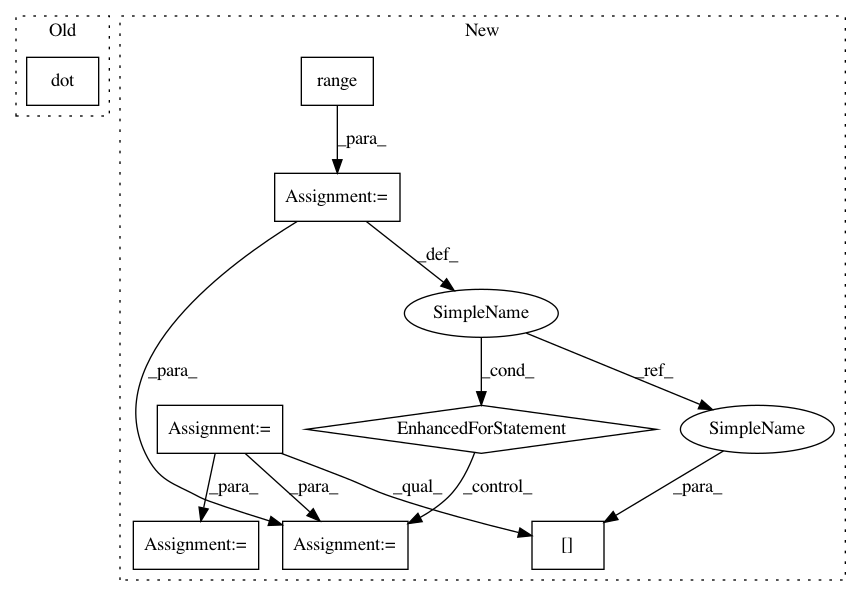

ab4d0a6e6cded5c967d601da6000b8c50b5c65ef,gpytorch/utils/toeplitz.py,,sym_toeplitz_derivative_quadratic_form,#Any#Any#,243
Before Change
dT_dc_row = utils.reverse(left_vector)
dT_dc_col[0] = dT_dc_row[0]
res = res + toeplitz_matmul(dT_dc_col, dT_dc_row, utils.reverse(right_vector))
res[0] -= left_vector.dot(right_vector)
return res
After Change
- vector m - a vector so that the ith element is the result of \sum_j(u[j]*(dT/dc_i)*v[j])
if left_vectors.ndimension() == 1:
left_vectors = left_vectors.unsqueeze(0)
right_vectors = right_vectors.unsqueeze(0)
s, m = left_vectors.size()
dT_dc_col = torch.zeros(m)
res = torch.zeros(m)
for j in range(s):
dT_dc_row = left_vectors[j]
dT_dc_col[0] = dT_dc_row[0]
res += toeplitz_matmul(dT_dc_col, dT_dc_row, right_vectors[j])
dT_dc_row = utils.reverse(left_vectors[j])
dT_dc_col[0] = dT_dc_row[0]
res = res + toeplitz_matmul(dT_dc_col, dT_dc_row, utils.reverse(right_vectors[j]))
res[0] -= (left_vectors * right_vectors).sum()
return res
In pattern: SUPERPATTERN
Frequency: 3
Non-data size: 8
Instances
Project Name: cornellius-gp/gpytorch
Commit Name: ab4d0a6e6cded5c967d601da6000b8c50b5c65ef
Time: 2017-09-08
Author: ruihan.wu14@gmail.com
File Name: gpytorch/utils/toeplitz.py
Class Name:
Method Name: sym_toeplitz_derivative_quadratic_form
Project Name: data61/python-paillier
Commit Name: eb4ffb6cdaf6f04f978fc57e32c95c8b4a33bcb6
Time: 2017-06-20
Author: giorgio.patrini@anu.edu.au
File Name: examples/federated_learning_with_encryption.py
Class Name: Client
Method Name: fit
Project Name: pymanopt/pymanopt
Commit Name: a1be7bf2f0926707e25b02570c17ba373878f768
Time: 2016-03-14
Author: jamiehntownsend@gmail.com
File Name: pymanopt/manifolds/psd.py
Class Name: PositiveDefinite
Method Name: exp
Project Name: cornellius-gp/gpytorch
Commit Name: ab4d0a6e6cded5c967d601da6000b8c50b5c65ef
Time: 2017-09-08
Author: ruihan.wu14@gmail.com
File Name: gpytorch/utils/toeplitz.py
Class Name:
Method Name: sym_toeplitz_derivative_quadratic_form